options(stringsAsFactors = F, scipen = 999, digits = 4)
#to find files within the Rproject
#install.packages("here")
library(here)
#visualization and exploration
library(ggplot2); theme_set(theme_bw())
library(skimr)
#statistics
library(car)
#data manipulation
library(tidyr)
library(dplyr)E2M2 2024: Basic Statistics
This is a Quarto document. It allows us to combine background text, code, and its output in one document. It can be “rendered” into an HTML file that can be read in any browser. All code chunks look like the following below, and can be run in RStudio just like a line in a standard .R script.
Some chunks may not yet be filled in. We will fill these in during the exercise part of the lecture. They currently have eval=FALSE written at the top of them. Once you have filled in those chunks, you can change this to eval=TRUE.
A “code-only” version of this tutorial is available in the basic-statistic-tutorial.R script. A completed version of tutorial is available in basic-statistics-completed.qmd.
Introduction
This is a tutorial that was developed as part of the E2M2 workshop held in March 2024. It is based on code developed by Michelle Evans. If you have any questions, please send an email to Michelle at mv.evans.phd@gmail.com.
This tutorial introduces several basic statistical methods used to assess the relationship between variables and compare values between groups.
By the end of the tutorial, you should be able to:
- Visualize your data and determine if it is parametric or non-parametric
- Conduct a correlation analysis
- Conduct two-sample t-tests
- Conduct an ANOVA analysis
Load the packages for this tutorial
Here are the packages we’ll need for this tutorial. I also choose to set some base configurations that I like, such as never reading in strings as factors, setting a limit for the number of digits to include when printing to the console, and setting a base theme for ggplot.
Remember that you may need to install packages that you don’t already have installed on your computer using install.packages("package-name"). There is an example commented out in the code chunk below.
Load the data
We will use several datasets for this tutorial:
Palmer penguins: A dataset of penguin body size, mass, sex, and species collected at the Palmer Station in Antarctica. More info here. I have cleaned this data slightly so it is easier to use in this course.
Flowers: This is a subset of the well-known iris dataset used in many R tutorials containing just the Versicolor species. It has info on flower sepal and petal size.
We load the datasets using read.csv. CSV files are an excellent way to store data because they can be read by R and spreadsheet software (such as Excel) and are very small. They also encourage you to store information in computer readable formats rather than as cell formatting. We use the here package to ensure that file path begins at the folder containing our .Rproject file, also known as a working directory.
penguins <- read.csv(here("data/penguins.csv"))
flowers <- read.csv(here("data/flowers.csv"))Data Exploration
Penguins
We will explore the penguins dataset for this exercise.
First, let’s look at the datasets structure and variables. We can do that using head in base R and skim from the skimr package.
head(penguins) species island bill_length_mm bill_depth_mm flipper_length_mm body_mass_g
1 Adelie Torgersen 39.1 18.7 181 3750
2 Adelie Torgersen 39.5 17.4 186 3800
3 Adelie Torgersen 40.3 18.0 195 3250
4 Adelie Torgersen 36.7 19.3 193 3450
5 Adelie Torgersen 39.3 20.6 190 3650
6 Adelie Torgersen 38.9 17.8 181 3625
sex year
1 male 2007
2 female 2007
3 female 2007
4 female 2007
5 male 2007
6 female 2007skimr::skim(penguins)| Name | penguins |
| Number of rows | 333 |
| Number of columns | 8 |
| _______________________ | |
| Column type frequency: | |
| character | 3 |
| numeric | 5 |
| ________________________ | |
| Group variables | None |
Variable type: character
| skim_variable | n_missing | complete_rate | min | max | empty | n_unique | whitespace |
|---|---|---|---|---|---|---|---|
| species | 0 | 1 | 6 | 9 | 0 | 3 | 0 |
| island | 0 | 1 | 5 | 9 | 0 | 3 | 0 |
| sex | 0 | 1 | 4 | 6 | 0 | 2 | 0 |
Variable type: numeric
| skim_variable | n_missing | complete_rate | mean | sd | p0 | p25 | p50 | p75 | p100 | hist |
|---|---|---|---|---|---|---|---|---|---|---|
| bill_length_mm | 0 | 1 | 43.99 | 5.47 | 32.1 | 39.5 | 44.5 | 48.6 | 59.6 | ▃▇▇▆▁ |
| bill_depth_mm | 0 | 1 | 17.16 | 1.97 | 13.1 | 15.6 | 17.3 | 18.7 | 21.5 | ▅▆▇▇▂ |
| flipper_length_mm | 0 | 1 | 200.97 | 14.02 | 172.0 | 190.0 | 197.0 | 213.0 | 231.0 | ▂▇▃▅▃ |
| body_mass_g | 0 | 1 | 4207.06 | 805.22 | 2700.0 | 3550.0 | 4050.0 | 4775.0 | 6300.0 | ▃▇▅▃▂ |
| year | 0 | 1 | 2008.04 | 0.81 | 2007.0 | 2007.0 | 2008.0 | 2009.0 | 2009.0 | ▇▁▇▁▇ |
During this class, we are going to try and explore if there is a difference in penguin body size between penguin species and island. We can make a boxplot of this to start understanding what our data looks like.
ggplot(penguins, aes(x = species, y = body_mass_g, fill = species)) +
geom_boxplot()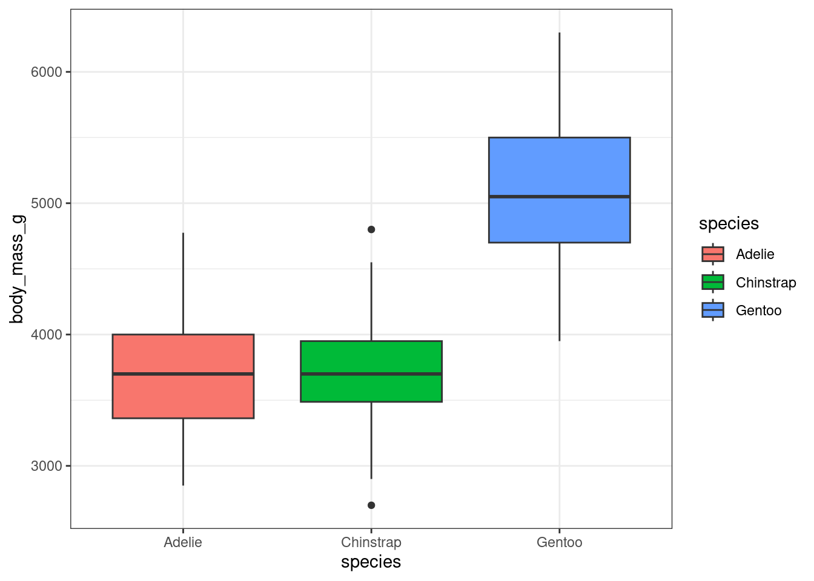
We also want to know what the distribution of this data is, so that we can start to get an idea of if it is parametric or non-parametric. To do that, we use a histogram.
ggplot(penguins, aes(x= body_mass_g, fill = species, group = species)) +
geom_histogram() +
facet_wrap(~species, nrow = 3)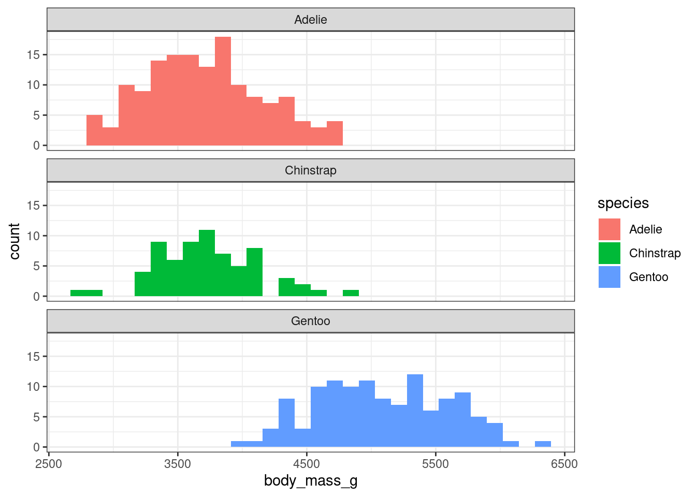
We also will later look at the correlation between different measures of body size. Let’s look at the relationship between two of them know with a scatterplot.
ggplot(penguins, aes(x = bill_length_mm, y = body_mass_g, color = species)) +
geom_point()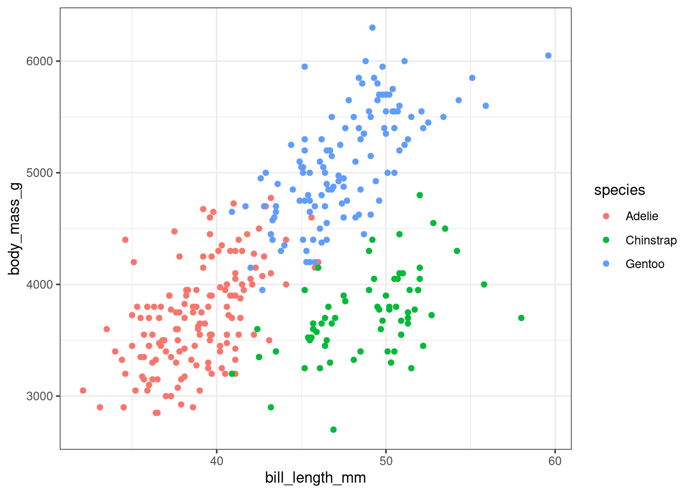
Verifying Model Assumptions
For parametric tests, there are four model assumptions that must be met:
Linearity : The relation between two variables is linear
Independence : Each observation is independent of all other observations
Normality: The distribution of the data must be normal
Homogeneity of variance: The variance of subsets or groups of data should be equal
Linearity
Linearity is most easily visualized via a scatter plot. Let’s compare Sepal.Length and Petal.Length in the flowers dataset in a scatter plot using geom_point.
Fill in the chunk below with the data and x and y variables.
ggplot(data = flowers, aes(x = Sepal.Length, y = Petal.Length)) +
geom_point()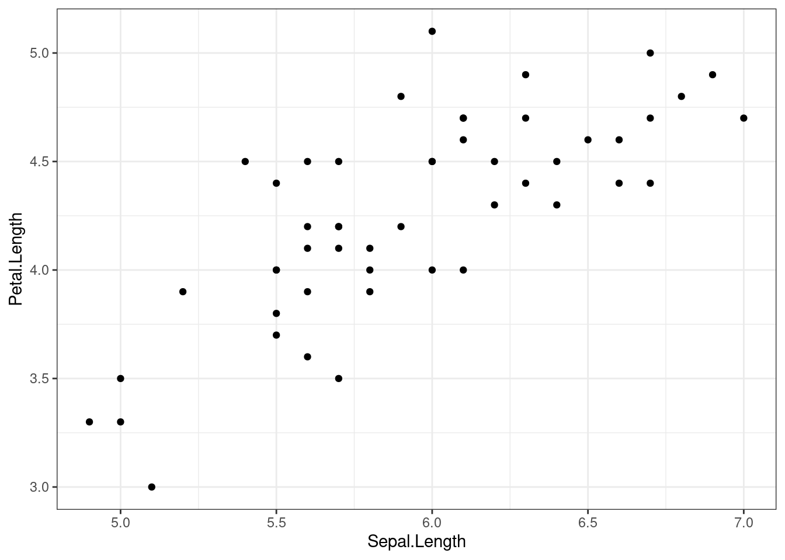
Is the relationship between these variables linear (i.e. a straight line)? If not, we may need to use a non-parametric method.
What about if we compare Sepal.Length and Sepal.Width?
ggplot(data = flowers, aes(x = Sepal.Length, y = Sepal.Width)) +
geom_point()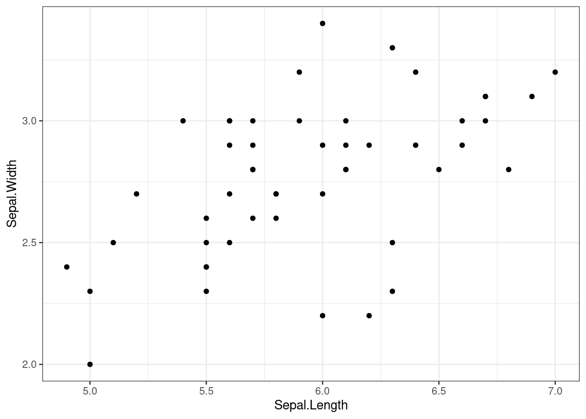
Independence
Independence is determined by the study-design, and there isn’t a statistical test to do for it. But, we can learn some things about study-design from a dataset. For example, in the penguins dataset, there is a column island that represents the survey site. This could be a hint that all the data may not be independent in this dataset.
colnames(penguins)[1] "species" "island" "bill_length_mm"
[4] "bill_depth_mm" "flipper_length_mm" "body_mass_g"
[7] "sex" "year" Normality
Normality refers to the distribution of the data. Normal data resembles a bell-curve, which is symmetrical on both sides.
We can visualize the distribution of data using a histogram or a density plot.
ggplot(penguins, aes(x = body_mass_g)) +
geom_histogram(bins = 40)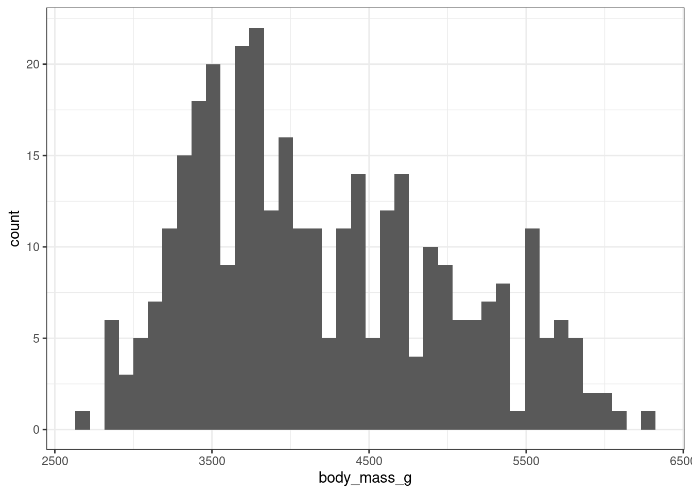
ggplot(penguins, aes(x = body_mass_g)) +
geom_density()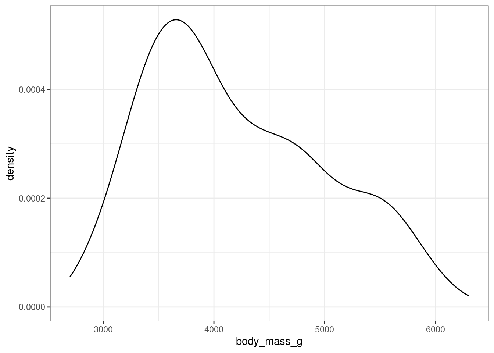
This data is right-skewed, meaning it has a longer “tail” on the right side. It may not be perfectly normally distributed because it contains multiple penguin species. We can plot the histogram using different fills and panels for each species to see if that improves things.
ggplot(penguins, aes(x = body_mass_g, fill = species)) +
geom_histogram() +
facet_wrap(~species)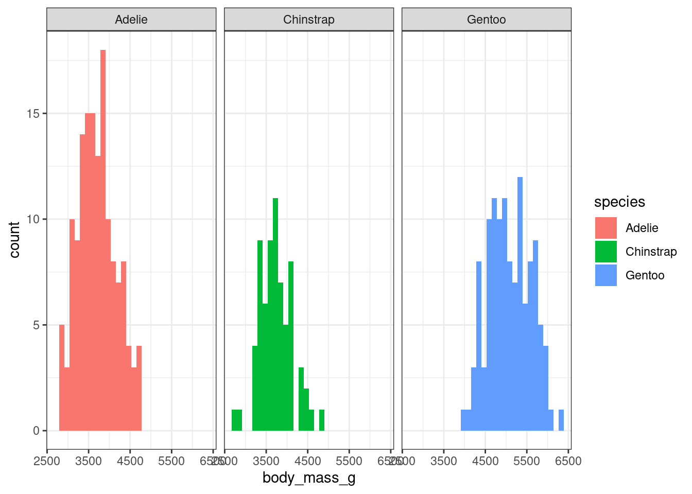
Within each group (species), the data seems to be normally distributed, which means it meets this assumption if we are comparing between the groups.
We can also test for if the data is normal using a Shapiro-Wilk’s test.
shapiro.test(penguins$body_mass_g)
Shapiro-Wilk normality test
data: penguins$body_mass_g
W = 0.96, p-value = 0.00000004This is a hypothesis test. The null hypothesis is that the data is normally distributed, and the alternative hypothesis is that the data is not normally distributed. Because the p-value is less than 0.05, we have enough evidence to infer that the body_mass_g variable is not normally distributed.
However, we can also apply this test to one class, for example the Chinstrap species of penguin.
shapiro.test(penguins$body_mass_g[penguins$species=="Chinstrap"])
Shapiro-Wilk normality test
data: penguins$body_mass_g[penguins$species == "Chinstrap"]
W = 0.98, p-value = 0.6Because the p-value is greater than 0.05, we have no reason to believe that the distribution of body mass for this species of penguin is not normally distributed.
Homogeneity of Variance
Homogeniety of variance means the variance of each group is the same.
We can visualize this using a boxplot or violin plot.
ggplot(penguins, aes(x = species, y = body_mass_g)) +
geom_boxplot(aes(fill = species))ggplot(penguins, aes(x = species, y = body_mass_g)) +
geom_violin(aes(fill = species)) 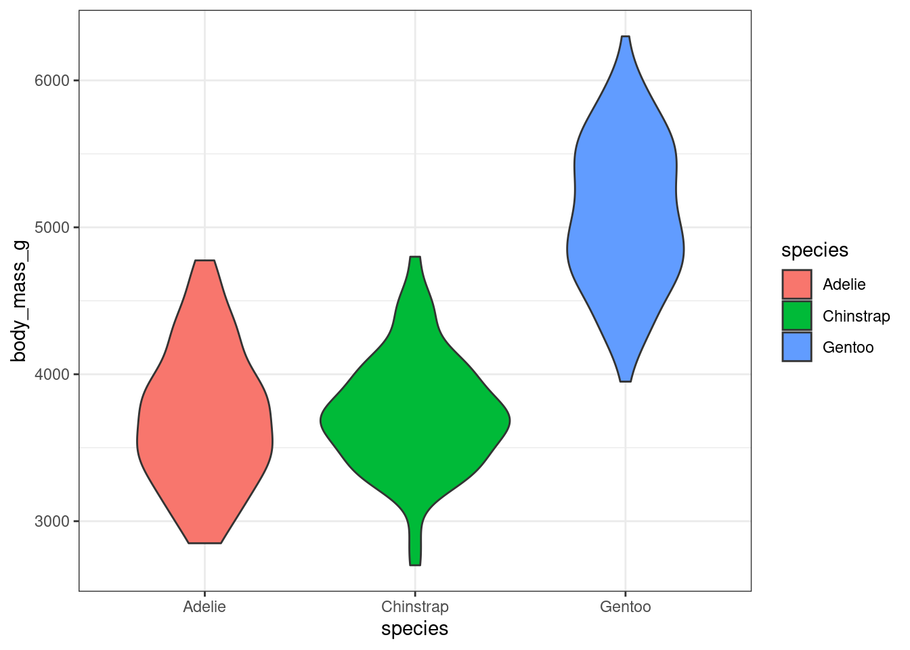
There are several tests for homogenity of variance:
Bartlett’s test: more sensitive to if the distribution of data is not normal
Levene’s test: less sensitive to non-normal data
We will use Levene’s test because it is generally more robust. The Levene’s test is in the car package. It uses a formula similar to those used in linear regression. The continuous variable is to the left of the tilde (~) and the grouping variable is to the right.
Fill in the formula below to test if the variance of body_mass_g is equal across the species group in the penguins dataset
car::leveneTest(body_mass_g ~ species, data = penguins)Levene's Test for Homogeneity of Variance (center = median)
Df F value Pr(>F)
group 2 5.13 0.0064 **
330
---
Signif. codes: 0 '***' 0.001 '**' 0.01 '*' 0.05 '.' 0.1 ' ' 1It is returning the results of a null hypothesis test. The null hypothesis is that all variances are equal across groups. The alternative hypothesis that we are testing is that the variances are not equal across groups. Because the p-value (Pr(>F)) is below 0.05, we would infer that the assumption of homogeneity of variance is violated (i.e. that the variances are different across the groups species).
Conducting Correlations
Correlations are used to compare the strength of an association between two continuous variables. They range between -1 (perfectly negatively correlated) and +1 (perfectly positively correlated).
Before applying a test of correlation, we should first visualize the data using a scatterplot. One variable is plotted on the x-axis and the other on the y-axis. Here we will compare flower sepal length and petal width from the flowers dataset. Fill in the code chunk below using geom_point from ggplot.
ggplot(data = flowers, aes(x = Sepal.Length, y = Petal.Width)) +
geom_point()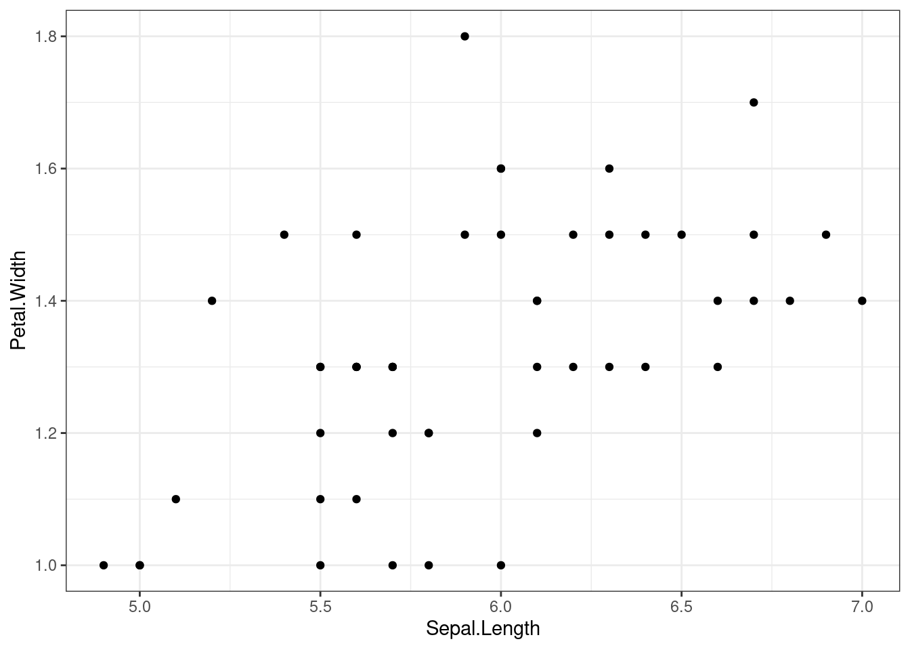
While these two variables have a positive monotonic (moving in one direction) association, it may not necessarily be linear. A Spearman’s correlation may be more appropriate for these variables.
Let’s explore two other variables in the dataset: sepal length and sepal width.
ggplot(data = flowers, aes(x = Sepal.Length, y = Sepal.Width)) +
geom_point() This relationship looks more linear, and could be assessed via a Pearson’s correlation. However, we must also verify that the data is normally distributed. We do this individually by variable.
ggplot(data = flowers, aes(x = Sepal.Length)) +
geom_histogram()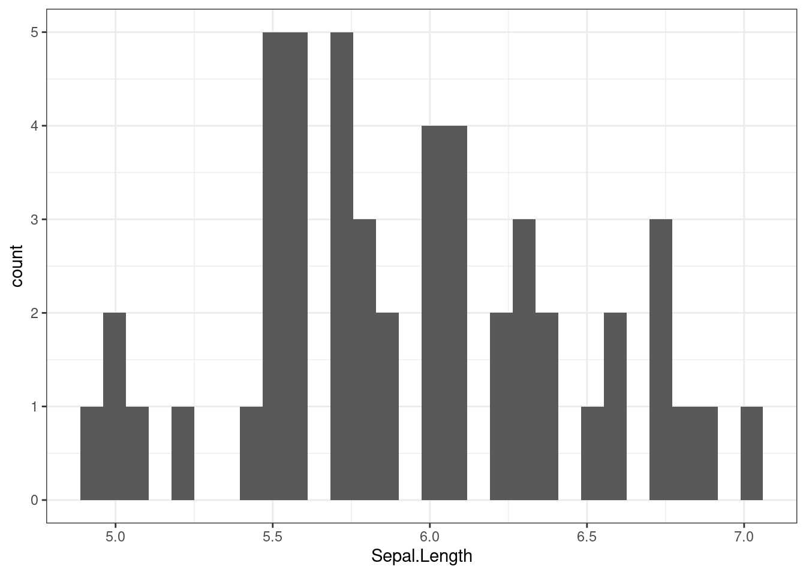
shapiro.test(flowers$Sepal.Length)
Shapiro-Wilk normality test
data: flowers$Sepal.Length
W = 0.98, p-value = 0.5Fill in the chunk below with the same assessment for the variable Sepal.Width.
shapiro.test(flowers$Sepal.Width)
Shapiro-Wilk normality test
data: flowers$Sepal.Width
W = 0.97, p-value = 0.3Becuase both variables are normally distributed, we can proceed with a Pearson’s correlation test.
Pearson’s
Both types of correlation tests use the cor.test function. You specify which type of test to use via the method argument. If you don’t specify, it will use a Pearson’s test by default.
cor.test(flowers$Sepal.Length, flowers$Sepal.Width, method = "pearson")
Pearson's product-moment correlation
data: flowers$Sepal.Length and flowers$Sepal.Width
t = 4.3, df = 48, p-value = 0.00009
alternative hypothesis: true correlation is not equal to 0
95 percent confidence interval:
0.2900 0.7016
sample estimates:
cor
0.5259 This is a null hypothesis test, where the null hypothesis is that the true correlation is equal to zero and the alternative hypothesis is that the true correlation is not equal to zero. We assess the strength of the correlation via the cor parameter and the statistical significance of the correlation via the p-value.
Because the cor value is positive and relatively high in the range of -1 to +1, we can infer that the association between these variables is positive and moderately strong. The p-value being low further supports this and suggests that the association is statistically significantly different from no association.
Spearman’s
In the data visualization above, Sepal Length and Petal Width seemed to have a non-linear relationship. They would be better assessed via a Spearman’s correlation, called rho.
Fill in the chunk below for the appropriate variables, ensuring you use the “spearman” method.
cor.test(flowers$Sepal.Length, flowers$Sepal.Width, method = "spearman")
Spearman's rank correlation rho
data: flowers$Sepal.Length and flowers$Sepal.Width
S = 10046, p-value = 0.0001
alternative hypothesis: true rho is not equal to 0
sample estimates:
rho
0.5176 Is this association positive or negative? How strong is it? Is it statistically significative?
Comparisons between groups
There are several statistical tests for comparing continuous variables (numeric, integer) between groups (factors). Which one to use depends on if the data is parameteric or non-parametric and on how many groups you have.
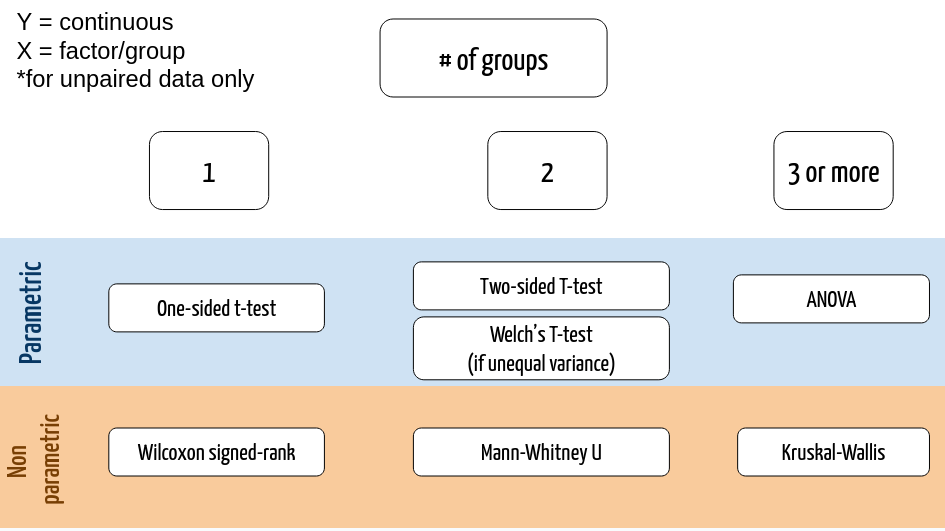
These tests will tell you whether the difference between groups is significant, but it will not calculate the effect size (or the magnitude of the difference). You can either report the means of each group, or use a post-hoc test to calculate the effect size. Today we will just focus on the means or medians. See the effectsize package for more info on calculating effect sizes.
Comparison between two groups
Parametric
If your data is parametric (normally distributed, independent, equal variance), you can use a t-test to compare a variable between groups. Both types of t-tests for two groups (two-sample and Welch’s) use the t.test function, but differ in their assumption of equal variance via the var.equal argument. Use ?t.test to access the help file for t.test to see what values this argument takes.
We can apply this to test for differences in bill_length_mm across sex in the penguins data. This variable is normally distributed and has equal variance among groups.
ggplot(penguins, aes(x = sex, y = bill_length_mm)) +
geom_jitter(width = 0.2, alpha = 0.5) +
geom_boxplot(fill = NA)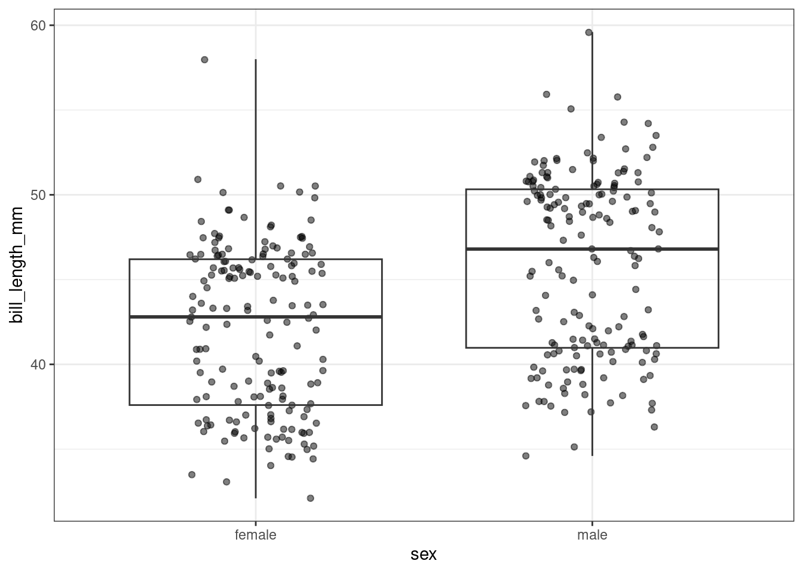
t.test(bill_length_mm ~ sex, data = penguins, var.equal = TRUE)
Two Sample t-test
data: bill_length_mm by sex
t = -6.7, df = 331, p-value = 0.0000000001
alternative hypothesis: true difference in means between group female and group male is not equal to 0
95 percent confidence interval:
-4.867 -2.649
sample estimates:
mean in group female mean in group male
42.10 45.85 This test returns information on the alternative hypothesis that the mean bill length differs between penguin sex. It provides the mean of each group (male and female), as well as the test statistics (t, df, p-value). All of these would be reported in a manuscript.
Non-Parametric
If your data is not normally distributed, you would use a Mann Whitney U (or Wilcoxon rank-sum Test), to compare measurements between two groups. This is done via the wilcox.test function.
bill_length_mm does not seem to be normally distributed. We would like to compare the length of penguins’ bills across islands. However, because the dataset has three islands, to perform this example we will need to subset the data to only two islands, Biscoe and Dream, because a Mann Whitney U test can only compare two groups.
ggplot(data = penguins,
aes(x = island, y = bill_length_mm)) +
geom_jitter(width = 0.2, alpha = 0.5) +
geom_boxplot(fill = NA)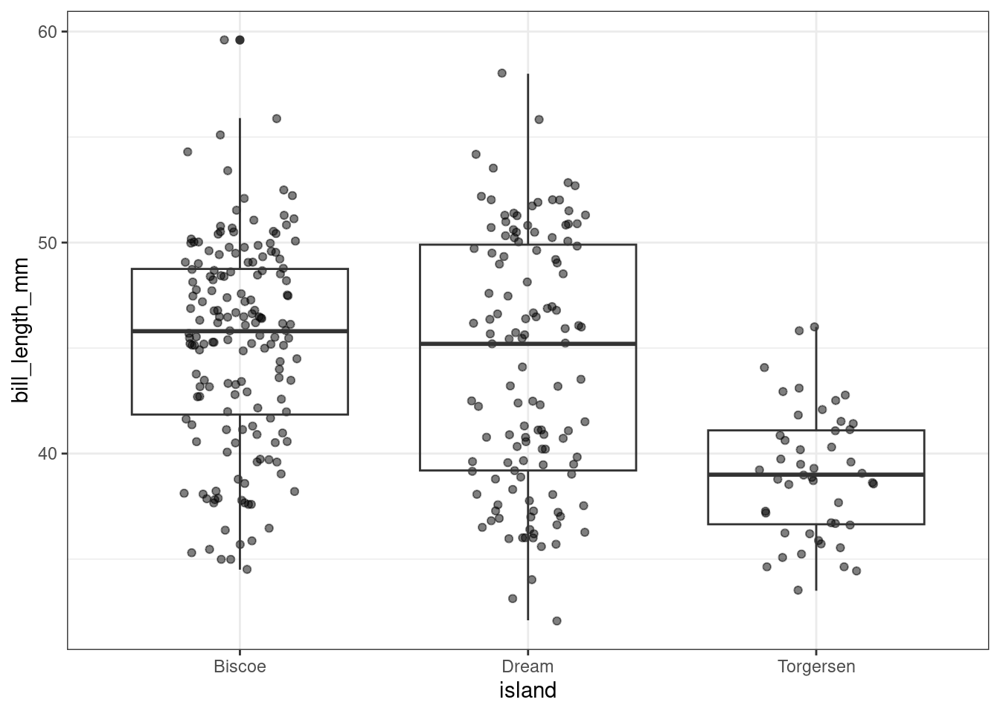
ggplot(data = penguins, aes(x = bill_length_mm)) +
geom_histogram() +
facet_wrap(~island)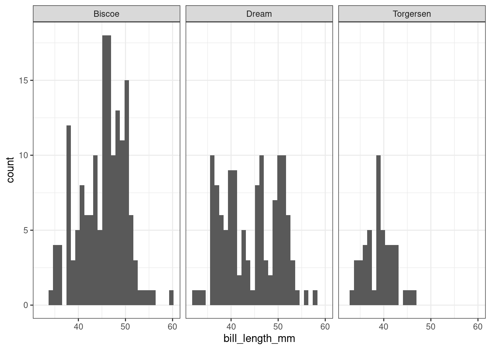
wilcox.test(bill_length_mm~island, data = penguins,
subset = island %in% c("Biscoe", "Dream"))
Wilcoxon rank sum test with continuity correction
data: bill_length_mm by island
W = 10846, p-value = 0.2
alternative hypothesis: true location shift is not equal to 0As we may have predicted from the boxplot, the variable bill_length_mm does not differ between the two islands.
This test does not report a summary statistic for each group, but we can calculate it ourselves using a combination of group_by and summarise function from dplyr:
penguins |>
group_by(island) |>
summarise(median = median(bill_length_mm),
#estimate IQR range too
low_IQR = quantile(bill_length_mm, 0.25),
upp_IQR = quantile(bill_length_mm, 0.75))# A tibble: 3 × 4
island median low_IQR upp_IQR
<chr> <dbl> <dbl> <dbl>
1 Biscoe 45.8 41.8 48.8
2 Dream 45.2 39.2 49.9
3 Torgersen 39 36.7 41.1Comparison between more than 2 groups
Parametric
An ANOVA (Analysis of Variance) Test is used to compare the means between 3 or more groups if the data is parametric. It uses the function aov. The test is provided using the formula format with a tilde (~). Use ?aov to see how to apply an ANOVA to explore if body_mass_g differs across species in the penguin dataset. The output of aov is not very informative, so it is better to save as an object and use summary.
Fill in the chunk below to run the ANOVA test.
anova_test <- aov(body_mass_g~species, data = penguins)
summary(anova_test) Df Sum Sq Mean Sq F value Pr(>F)
species 2 145190219 72595110 342 <0.0000000000000002 ***
Residuals 330 70069447 212332
---
Signif. codes: 0 '***' 0.001 '**' 0.01 '*' 0.05 '.' 0.1 ' ' 1In this output, we are particularly concerned with a couple of values. Df is the degrees of freedom, equal to the number of groups (k) - 1. Pr(>F) is the p-value, representing the probability that the difference among groups is due to chance.
This gives us informatoin about whether body size differs between species, but does not tell us which species have different body sizes. For that, we need to perform a post-hoc or pairwise comparison. There are multiple types of these tests, but we will use a Bonferroni for now. Read more about the other options here.
Based on our data visualization, we suspect that Gentoo penguins are significantly larger than the other two species, so will a post-hoc comparisons to compare Gentoo penguins with Adelie and Chinstrap penguins and calculate and adjusted p-value.
pairwise.t.test(penguins$body_mass_g, penguins$species,
p.adjust.method = "bonferroni")
Pairwise comparisons using t tests with pooled SD
data: penguins$body_mass_g and penguins$species
Adelie Chinstrap
Chinstrap 1 -
Gentoo <0.0000000000000002 <0.0000000000000002
P value adjustment method: bonferroni Based on this, we can see that the difference between Adelie and Chinstrap penguins is not significant (p-value = 1), but the differences between Gentoo and the other two species have very low p-values, suggesting those differences are statistically significant. These pairwise differences are often illustrated on a plot using letters to denote groups with significant differences, like below:
ggplot(penguins, aes(x = species, y = body_mass_g, color = species)) +
geom_jitter(alpha = 0.5, width = 0.2) +
geom_boxplot(fill = NA) +
guides(color = "none") +
geom_text(data = data.frame(label = c("a","a", "b"),
x = levels(factor(penguins$species)),
y = c(5000,5000,6450)),
aes(x = x, y = y, label = label), color = "black")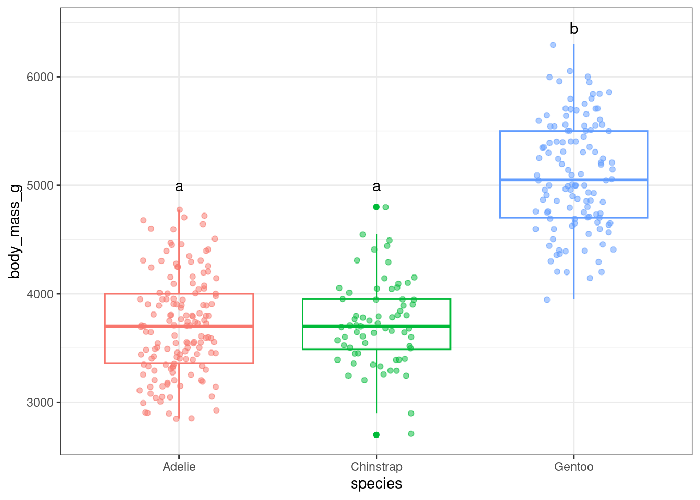
Non-Parametric
ANOVA tests are more robust than t-tests to data with unequal variance, but still require your data to be normally distributed. If your data is not normally distributed, you can use a Krusal-Wallis test to compare the rank of values between groups (similar to the Spearman’s correlation).
In our dataset, the variable flipper_length_mm seems to not be normally distributed, especially on Biscoe island.
ggplot(penguins, aes(x = flipper_length_mm)) +
geom_histogram()+
facet_wrap(~island, nrow = 3)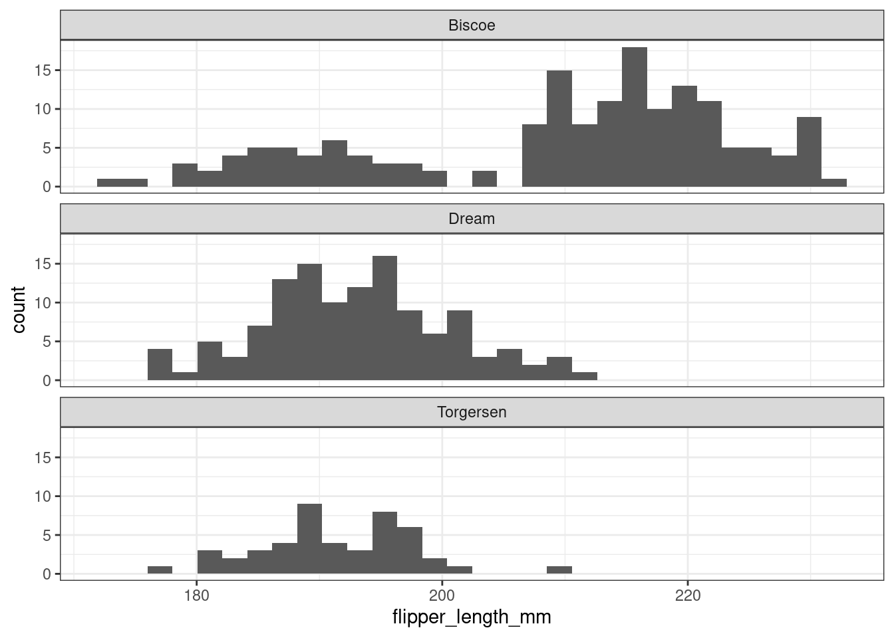
We will use a the Kruskal-Wallis test to compare the flipper lengths of penguins across the islands. The function kruskal.test accepts data in a formula format.
Fill in the code chunk below in the format of response ~ group.
kruskal.test(flipper_length_mm ~ island, data = penguins)
Kruskal-Wallis rank sum test
data: flipper_length_mm by island
Kruskal-Wallis chi-squared = 103, df = 2, p-value <0.0000000000000002How would we interpret these results?
This result confirms that the flipper lengths are different across the islands, but like the ANOVA, does not tell us which islands have significantly different flipper lengths. We will need to use a post-hoc comparison to estimate that. The pairwise.wilcox.test function performs this test, and we will need to specify the method we want to use for non-parametric data. We can again use the Bonferroni method.
pairwise.wilcox.test(penguins$flipper_length_mm, penguins$island,
p.adjust.method = "bonferroni")
Pairwise comparisons using Wilcoxon rank sum test with continuity correction
data: penguins$flipper_length_mm and penguins$island
Biscoe Dream
Dream < 0.0000000000000002 -
Torgersen 0.00000000001 0.7
P value adjustment method: bonferroni This post-hoc test confirms what we saw in the plot. Flipper length is different on Biscoe island than the other two islands.
Conclusion
We followed these steps to conduct basic statistical analyses of our data:
- Visualized data
- Verified that data followed assumptions
- Applied statistical tests
- Conducted post-hoc comparisons (for multi-group)
However, you may have noticed that we visualized our data at nearly all of these steps, not just the beginning. Visualizing your data is the best way to better understand your data, ensure you are following statistical assumptions, and properly interpreting statistical tests. The best statistical technique you can learn is how to visualize your data in multiple ways and how to interpret figures, because it is used in all statistical approaches.